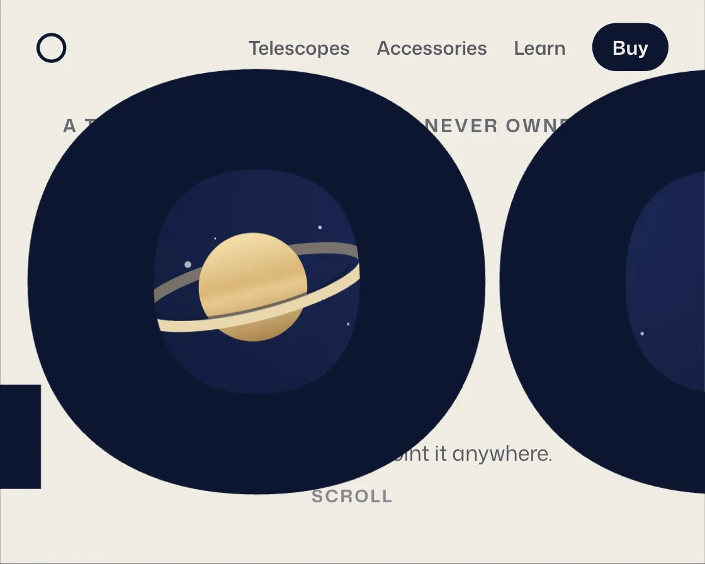

Zoom-through
Zoom-through is a DOM effect: exponential scale flies the view through a letter’s counter. One plain JavaScript file with no dependencies; add it with npx motion-library add zoom-through.

Open it live, tune it and copy the code
What is Zoom-through?
Saturn shows through the O of LOOK, and scrolling scales the word until you fly through the letter.
How does Zoom-through work?
The word scales exponentially around the O’s counter, which reads as a steady push; the counters are evenodd clip-path holes, so the sky shows through from the start.
How do I add Zoom-through to my website?
- In your project folder, run
npx motion-library add zoom-through. It writesanimations/zoom-through.js. Needs Node 18 or newer. - Import it and call it with a container element that has a size:
import fx from './animations/zoom-through.js'; const stop = fx(document.querySelector('#hero')); - Call
stop()to clean up, for example when a component unmounts.
Every setting below is also a flag, so you can install it already tuned: npx motion-library add zoom-through --maxScale 60.
What settings can I tweak?
| Setting | Flag | Default | Range | Step |
|---|---|---|---|---|
| Max scale | --maxScale | 28 | 5 to 60 | 1 |
Specifications
- Renderer
- DOM (CSS and the Web Animations API)
- Category
- Scroll
- Dependencies
- None
- File size
- 9.6 KB, unminified
- Interactive
- Yes: it follows scrolling
- Reduced motion
- Respects prefers-reduced-motion
- Licence
- MIT-0: use it anywhere, no credit needed
Source code
// Zoom-through, on a telescope's product page: scrolling scales the word LOOK exponentially around the hole of its O, until you fly through the letter into the night sky the telescope is for.
// Exponential scale reads as a steady push forward (linear scale would feel like braking), and anchoring the transform origin inside the counter means the hole stays put while everything else rushes past. The page scrolls itself here, and a real wheel or swipe takes over.
const PARAMS = { maxScale: 28 };
export default function (stage) {
const reduce = matchMedia('(prefers-reduced-motion: reduce)').matches;
const AH = 340, MINW = 400;
let seed = 11; const rnd = () => (seed = (seed * 16807) % 2147483647) / 2147483647;
const stars = Array.from({ length: 90 }, () => `<circle cx="${(rnd() * 600).toFixed(1)}" cy="${(rnd() * 340).toFixed(1)}" r="${(0.4 + rnd() * rnd() * 1.6).toFixed(2)}" opacity="${(0.35 + rnd() * 0.65).toFixed(2)}"/>`).join('');
const root = document.createElement('div');
root.className = 'zt-root';
root.innerHTML = `<style>
.zt-root { position: absolute; inset: 0; overflow: hidden; background: #0d1530; font-family: "Mona Sans", system-ui, -apple-system, sans-serif; }
.zt-art { position: absolute; left: 0; top: 0; height: ${AH}px; transform-origin: 0 0; }
.zt-scroll { position: absolute; inset: 0; overflow-y: auto; overflow-x: hidden; scrollbar-width: none; }
.zt-scroll::-webkit-scrollbar { display: none; }
.zt-scene { position: sticky; top: 0; height: ${AH}px; overflow: hidden; }
.zt-sky { position: absolute; inset: 0; background: radial-gradient(500px 300px at 70% 40%, #1c2a57, #0d1530 70%); color: #eef1ff; will-change: transform; }
.zt-sky > svg { position: absolute; inset: 0; width: 100%; height: 100%; }
.zt-saturn { position: absolute; right: 6%; top: 70px; width: 180px; height: 120px; will-change: transform; }
.zt-saturn svg { display: block; width: 100%; height: 100%; }
.zt-copy { position: absolute; left: 28px; top: 70px; max-width: 250px; }
.zt-copy small { font-size: 10.5px; font-weight: 700; letter-spacing: .12em; color: #ffcf7a; }
.zt-copy h2 { margin: 8px 0 14px; font-size: 30px; line-height: 1.02; font-weight: 720; letter-spacing: -0.03em; }
.zt-specs { display: flex; gap: 16px; font-size: 10.5px; color: #aeb7dc; }
.zt-specs b { display: block; font-size: 17px; color: #eef1ff; font-weight: 680; }
.zt-buy { display: inline-block; margin-top: 18px; padding: 9px 15px; border-radius: 999px; background: #ffcf7a; color: #1b1405; font-size: 12px; font-weight: 680; }
.zt-cover { position: absolute; inset: 0; background: #f0ece4; will-change: opacity; }
.zt-nav { position: absolute; left: 22px; right: 22px; top: 14px; display: flex; align-items: center; gap: 16px; font-size: 11.5px; font-weight: 560; color: #5b5a63; }
.zt-nav i { width: 18px; height: 18px; margin-right: auto; border-radius: 50%; border: 2px solid #0d1530; box-sizing: border-box; }
.zt-nav b { color: #f0ece4; background: #0d1530; padding: 6px 12px; border-radius: 999px; font-weight: 650; }
.zt-lead { position: absolute; left: 0; right: 0; top: 68px; text-align: center; font-size: 11px; font-weight: 650; letter-spacing: .12em; color: #6b6a72; }
.zt-tail { position: absolute; left: 0; right: 0; bottom: 34px; text-align: center; font-size: 13px; color: #5b5a63; }
.zt-tail span { display: block; margin-top: 10px; font-size: 10.5px; letter-spacing: .1em; font-weight: 650; color: #8a8890; }
.zt-hold { position: absolute; left: 0; right: 0; top: 0; bottom: 0; display: grid; place-items: center; pointer-events: none; }
.zt-word { font-size: 130px; font-weight: 900; font-stretch: 115%; color: #0d1530; letter-spacing: -0.04em; line-height: 1; will-change: transform, opacity; }
</style>
<div class="zt-art"><div class="zt-scroll"><div class="zt-track"><div class="zt-scene">
<div class="zt-sky">
<svg viewBox="0 0 600 340" preserveAspectRatio="xMidYMid slice" aria-hidden="true"><g fill="#fff">${stars}</g></svg>
<div class="zt-copy"><small>120 MM REFRACTOR</small><h2>Saturn, from your balcony.</h2><div class="zt-specs"><span><b>120 mm</b>aperture</span><span><b>900 mm</b>focal length</span><span><b>6.4 kg</b>all in</span></div><span class="zt-buy">Order · €690</span></div>
</div>
<div class="zt-saturn"><svg viewBox="0 0 180 120" aria-hidden="true"><defs><linearGradient id="zt-p" x1="0" y1="0" x2="0" y2="1"><stop offset="0" stop-color="#f6dfaa"/><stop offset=".45" stop-color="#d9b678"/><stop offset=".55" stop-color="#e8c98e"/><stop offset="1" stop-color="#a98450"/></linearGradient></defs>
<g transform="rotate(-14 90 60)"><path d="M18 60a72 18 0 0 1 144 0" fill="none" stroke="#c8b38a" stroke-width="7" opacity=".55"/><circle cx="90" cy="60" r="34" fill="url(#zt-p)"/><path d="M162 60a72 18 0 0 1-144 0" fill="none" stroke="#e9d7ae" stroke-width="7"/><path d="M152 60a62 14 0 0 1-124 0" fill="none" stroke="#0d1530" stroke-width="2" opacity=".5"/></g></svg></div>
<div class="zt-cover">
<div class="zt-nav"><i></i><span>Telescopes</span><span>Accessories</span><span>Learn</span><b>Buy</b></div>
<div class="zt-lead">A TELESCOPE FOR PEOPLE WHO NEVER OWNED ONE</div>
<div class="zt-tail">Set up in two minutes. Point it anywhere.<span>SCROLL</span></div>
</div>
<div class="zt-hold"><div class="zt-word">L<span class="zt-o">O</span><span class="zt-o2">O</span>K</div></div>
</div></div></div></div>`;
stage.append(root);
const art = root.querySelector('.zt-art'), sc = root.querySelector('.zt-scroll'), track = root.querySelector('.zt-track');
const word = root.querySelector('.zt-word'), o = root.querySelector('.zt-o'), o2 = root.querySelector('.zt-o2'), cover = root.querySelector('.zt-cover'), sky = root.querySelector('.zt-sky');
const sat = root.querySelector('.zt-saturn'), copy = root.querySelector('.zt-copy');
track.style.height = AH * 3.5 + 'px';
let sx = 0, sy = 0, ox = 0, oy = 0, o2x = 0, wx = 0, wy = 0, rx = 0, ry = 0, aw = 0;
const fit = () => {
const W = stage.clientWidth, H = stage.clientHeight, s = Math.min(H / AH, W / MINW) || 1; aw = W / s;
art.style.width = aw + 'px'; art.style.top = (H - AH * s) / 2 + 'px'; art.style.transform = `scale(${s})`;
word.style.fontSize = Math.min(150, aw * 0.27).toFixed(1) + 'px';
// origin = centre of the O's counter, relative to the word box (measured once, not every frame)
ox = o.offsetLeft + o.offsetWidth / 2; oy = o.offsetTop + o.offsetHeight * 0.52;
word.style.transformOrigin = `${ox}px ${oy}px`;
o2x = o2.offsetLeft + o2.offsetWidth / 2; wx = word.offsetLeft; wy = word.offsetTop;
// the hole cut in the page sits between the O's counter and its outer edge, so the letter itself hides the cut
const F = parseFloat(word.style.fontSize); rx = o.offsetWidth * 0.3; ry = F * 0.27;
sat.style.transform = 'none'; sx = sat.offsetLeft + 90; sy = sat.offsetTop + 60;
};
const ro = new ResizeObserver(fit); ro.observe(stage); fit();
// Simulated reader: rest on the word, push slowly into it, hold in the sky, then return to the top.
const end = () => sc.scrollHeight - sc.clientHeight;
const stops = [[0, 0, 1400], [0.32, 1500, 500], [0.86, 1500, 1900], [1, 700, 600], [0, 1800, 300]];
const ease = t => t < 0.5 ? 4 * t * t * t : 1 - Math.pow(-2 * t + 2, 3) / 2;
let seg = null, si = 0, userUntil = 0, raf;
const take = () => { userUntil = performance.now() + 3000; seg = null; };
['wheel', 'touchstart', 'pointerdown'].forEach(e => sc.addEventListener(e, take, { passive: true }));
function drive(now) {
if (now < userUntil) return;
if (!seg) { const [at, dur, hold] = stops[si++ % stops.length]; seg = { from: sc.scrollTop, to: at * end(), t0: now, dur, hold }; }
const k = seg.dur ? Math.min(1, (now - seg.t0) / seg.dur) : 1;
sc.scrollTop = seg.from + (seg.to - seg.from) * ease(k);
if (now - seg.t0 >= seg.dur + seg.hold) seg = null;
}
function frame(now) {
drive(now);
const max = end(), p = max > 0 ? sc.scrollTop / max : 0;
// reduced motion: no flight through the O; the page crossfades to the sky and Saturn waits in its final place
const s = reduce ? 1 : Math.pow(PARAMS.maxScale, Math.min(1, p / 0.8));
word.style.transform = `scale(${s.toFixed(4)})`;
// both Os are windows cut into the page: the sky shows through their counters from the start, and the first one grows with the zoom
const hole = (cx, cy, a, b) => `M${(cx - a).toFixed(1)} ${cy.toFixed(1)}a${a.toFixed(1)} ${b.toFixed(1)} 0 1 0 ${(2 * a).toFixed(1)} 0a${a.toFixed(1)} ${b.toFixed(1)} 0 1 0 ${(-2 * a).toFixed(1)} 0Z`;
const cx = wx + ox, cy = wy + oy;
cover.style.clipPath = `path(evenodd, "M0 0H${aw.toFixed(1)}V${AH}H0Z${hole(cx, cy, rx * s, ry * s)}${hole(cx + (o2x - ox) * s, cy, rx * s, ry * s)}")`;
const through = Math.min(1, Math.max(0, (p - 0.45) / 0.25));
cover.style.opacity = (1 - Math.min(1, Math.max(0, (p - 0.6) / 0.15))).toFixed(3);
word.style.opacity = (1 - Math.min(1, Math.max(0, (p - 0.7) / 0.1))).toFixed(3);
sky.style.transform = reduce ? 'none' : `scale(${(1.25 - 0.25 * through).toFixed(4)})`;
// Saturn starts small inside the first O, like the view in an eyepiece, grows with the zoom, then settles beside the copy
const k = reduce ? 1 : ease(through), sc0 = Math.min(1, (ry * 1.25 / 120) * s);
sat.style.transform = `translate(${((cx - sx) * (1 - k)).toFixed(1)}px, ${((cy - sy) * (1 - k)).toFixed(1)}px) scale(${(sc0 + (1 - sc0) * k).toFixed(4)})`;
copy.style.opacity = Math.max(0, (through - 0.4) / 0.6).toFixed(3);
raf = requestAnimationFrame(frame);
}
raf = requestAnimationFrame(frame);
return () => { cancelAnimationFrame(raf); ro.disconnect(); root.remove(); };
}